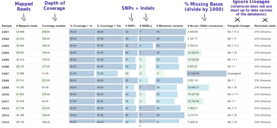
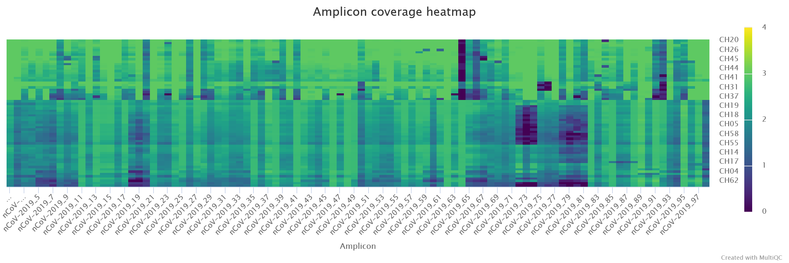
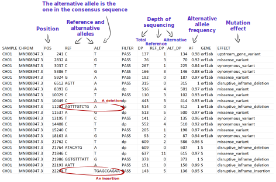
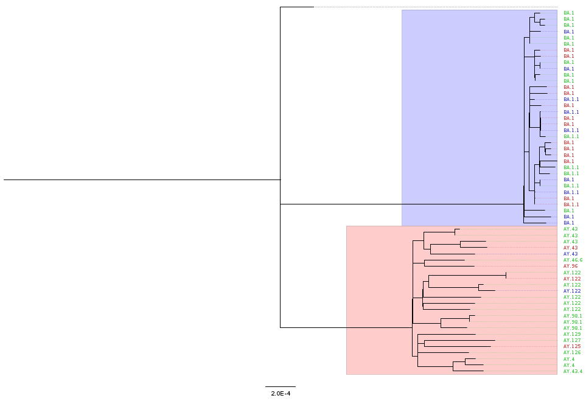
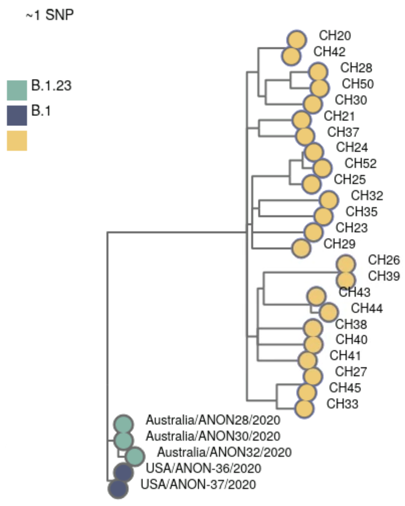

8 Switzerland (Nanopore)
This section demonstrates a start-to-finish analysis of a dataset sequenced on a Nanopore platform, using the concepts and tools covered in previous sections. You can download the data from these links (two versions available):
- Switzerland Case Study - Full Data – this includes data for 65 samples, which gives a more realistic sample size, but can take several hours to run on a small computer.
- Switzerland Case Study - Small Version – this includes data for a subset of 10 samples, which is more suitable for training purposes (but the results will look slightly different from the ones shown here).
By the end of this section, you should be able to:
- Prepare all the files necessary to run the consensus pipeline.
- Run the viralrecon pipeline to generate FASTA consensus from raw FASTQ files.
- Assess and collect several quality metrics for the consensus sequences.
- Clean output files, in preparation for other downstream analysis.
- Assign sequences to lineages using Nextclade and/or Pangolin.
- Contextualise your sequences in other background data and cluster them based on phylogenetic analysis.
- Integrate the metadata and results to generate useful visualisations of your data.
- Report your analysis.
We will analyse data from 48 samples collected in Switzerland between Nov 2021 and Jan 2022. The samples were sequenced on a GridION platform using pore version 9.4.1.
The final product of our work (and main objective) is to produce a report of the analysis, which you can see here: Switzerland Case Study Report.
In summary, the report addresses the following:
- What was the quality of the consensus sequences?
- What lineage/clade was each of our samples assigned to?
- How many clusters of samples did we identify?
- How did the detected lineages change over the time of sampling?
We also produce several essential output files, which would usually be necessary to upload our data to public repositories:
- Metadata (CSV)
- Consensus sequences (FASTA)
- Consensus sequence quality metrics (CSV)
- Variants (CSV)
8.1 Pipeline Overview
Our analysis starts with FASTQ files, which will be used with the nf-core/viralrecon Nextflow pipeline. This will give us several quality control metrics essential for our downstream analysis and reporting.
Critical files output by the pipeline will need to be further processed, including combining our consensus FASTA files and obtaining a list of filtered SNP/indel variants. Using these clean files, we can then proceed to downstream analysis, which includes assigning each sample to the most up-to-date Pango lineage, Nextclade clade and WHO designation. Finally, we can do more advanced analysis, including the idenfication of sample clusters based on phylogenetic analysis, or produce timeseries visualisations of mutations or variants of concern. With all this information together, we will have the necessary pieces to submit our results to public repositories and write reports to inform public health decisions.

8.2 Preparing Files
Before we start our work, it’s always a good idea to setup our directory structure, so we keep our files organised as the analysis progresses. From the data we are starting with, we already have the following directories:
data→ contains the sequencing data in a sub-directory calledfast_pass.resources→ files that were downloaded from public repositories.scripts→ bash and R scripts used to run the analysis.
We create two additional directories:
report→ files and documents that we report to our colleagues or upload to public repositories.results→ results of the analysis.
You can create directories from the command line using the mkdir command:
mkdir results
mkdir report8.2.1 Data
We start our analysis from FASTQ files generated using the software Guppy v6.1.5 ran in “fast” mode. This software outputs the files to a directory called fastq_pass, with further sub-directories for each sample barcode. This is how it looks like in this case:
ls data/fastq_passbarcode01 barcode08 barcode15 barcode22 barcode29 barcode36 barcode43 barcode50 barcode57
barcode02 barcode09 barcode16 barcode23 barcode30 barcode37 barcode44 barcode51 barcode58
barcode03 barcode10 barcode17 barcode24 barcode31 barcode38 barcode45 barcode52 barcode59
barcode04 barcode11 barcode18 barcode25 barcode32 barcode39 barcode46 barcode53 barcode60
barcode05 barcode12 barcode19 barcode26 barcode33 barcode40 barcode47 barcode54 barcode61
barcode06 barcode13 barcode20 barcode27 barcode34 barcode41 barcode48 barcode55 barcode62
barcode07 barcode14 barcode21 barcode28 barcode35 barcode42 barcode49 barcode56 barcode638.2.2 Metadata
Metadata for these samples is available in the file sample_info.csv. Here is some of the information we have available for these samples:
sample→ the sample ID.collection_date→ the date of collection for the sample in the format YYYY-MM-DD.country→ the country of origin for this sample.latitude/longitude→ coordinates for sample location (optional).sequencing_instrument→ the model for the sequencing instrument used (e.g. NovaSeq 6000, MinION, etc.).sequencing_protocol_name→ the type of protocol used to prepare the samples (e.g. ARTIC).amplicon_primer_scheme→ for amplicon protocols, what version of the primers was used (e.g. V3, V4.1)- Specific columns for Oxford Nanopore data, which are essential for the bioinformatic analysis:
ont_pore→ the version of the pores.ont_guppy_version→ the version of the Guppy software used for basecalling.ont_guppy_mode→ the basecalling mode used with Guppy.
8.3 Consensus Assembly
See Section 4.1, if you need to revise how the nf-core/viralrecon pipeline works.
The first step in the bioinformatic analysis is to run the nf-core/viralrecon pipeline.
8.3.1 Samplesheet
But first we need to prepare our input files. For Nanopore data, we need a samplesheet CSV file with two columns, indicating sample name (first column) and the respective barcode number (second column).
We produced this table in Excel and saved it as a CSV file. Here are the top few rows of the file:
head samplesheet.csvsample,barcode
CH01,1
CH02,2
CH03,3
CH04,4
CH05,5
CH06,6
CH07,7
CH08,8
CH09,9
CH10,108.4 Consensus Quality
See Section 5.2, if you need to revise how to assess the quality of consensus sequences.
8.4.1 General Metrics
We used the MultiqQC report to assess the initial quality of our samples. The quality report can be found in results/viralrecon/multiqc/medaka/multiqc_report.html.
We paid particular attention to:
- Number of reads mapped to the reference genome.
- Median depth of coverage.
- Percentage of the genome with missing bases (‘N’).
- Number of SNP + Indel variants.

We noted that:
- 9 samples had more than 15% missing bases.
- All samples had median depth of coverage greater than 20x.
- There was some systematic dropout for some amplicons, in particular
nCoV-2019_64had very low amplification in several of the samples. Of note was alsonCoV-2019_73, and other neighbouring amplicons.

Besides the MultiQC report, the pipeline also outputs a CSV file with collected summary metrics (equivalent to the first table on the report): results/viralrecon/multiqc/medaka/summary_variants_metrics_mqc.csv. We will use this file later to join this information with our metadata and lineage assignment using the R software (detailed in “Integration & Visualisation” section, below).
8.4.2 Variants
We also looked at the table of variants obtained from the pipeline. This is output in results/viralrecon/medaka/variants_long_table.csv. This table can be very useful to keep track of particular mutations that may be increasing over time. Later, we will tidy this table to attach to our reported results (“Integration & Visualisation” section).
But for now, we will explore this table to address a few more quality-related questions. We opened this table in Excel to answer the following:
- Where there samples with a high number of intermediate allele frequencies? This could indicate mixed samples due to cross-contamination.
- Where there samples with frameshift mutations? These mutations should be rare because they are highly disruptive to the functioning of the virus. So, their occurrence may be due to errors rather than a true mutation and it’s good to make a note of this.
All the variants in our samples had an alternative allele frequency (AF column) greater than 68%, which is a good indication that there were no mixed samples. We did note two samples – CH13 and CH49 – had a frameshift mutation each, in the Spike and ORF1a proteins, respectively. This may be due to a sequencing error, as it is not observed in any other samples. The inclusion of this error may not affect our downstream analysis significantly, but we make a note of these two samples, to check if their lineage assignment and phylogenetic analysis makes sense later on (or whether they appear as outliers, indicating broader sequencing quality issues).

8.4.3 Clean FASTA
The pipeline outputs the consensus sequences in results/viralrecon/medaka/*.consensus.fasta (one file for each sample). For downstream analysis, it is convenient to combine all these sequences into a single file, and also clean the sequence names (to remove some text – “/ARTIC/medaka MN908947.3” –, which is added by the medaka variant caller).
We created a new script to clean our consensus FASTA files, which we ran with bash scripts/02-clean_fasta.sh:
#!/bin/bash
# combine and clean FASTA files
cat results/viralrecon/medaka/*.consensus.fasta | sed 's|/ARTIC/medaka MN908947.3||' > report/consensus.faThis command does two things:
- Combine all our FASTA consensus sequences into a single file (using
cat). - Clean the sequence names (using
sed).
The output was saved as a new FASTA file: report/consensus.fa.
8.4.4 Missing Intervals
As a further quality check, we also generated a table of missing intervals (indicated by the N character in the FASTA sequences). We used the seqkit software to achieve this.
First, we activate our software environment:
mamba activate seqkitThen, we ran the script bash scripts/03-missing_intervals.sh, which includes the following command:
seqkit locate -i -P -G -M -r -p "N+" report/consensus.fa > results/missing_intervals.tsvThis software outputs a tab-delimited table, which we saved as results/missing_intervals.tsv. The table looks like this (only the top few rows are shown):
seqID patternName pattern strand start end
CH01 N+ N+ + 1 54
CH01 N+ N+ + 1193 1264
CH01 N+ N+ + 4143 4322
CH01 N+ N+ + 6248 6294
CH01 N+ N+ + 7561 7561
CH01 N+ N+ + 9243 9311
CH01 N+ N+ + 10367 10367
CH01 N+ N+ + 11361 11370
CH01 N+ N+ + 13599 13613We opened this file missing_intervals.tsv in Excel and quickly calculated the length of each interval. We noted that two samples – CH07 and CH59 – both have a continuous interval of 5130 missing bases between positions 19580 and 24709. This includes part of the ORF1a gene and nearly all of the S (Spike) gene. This may be due to a poor amplification of one of the PCR amplicons and may affect the interpretation of the results for these two samples. We make a note of these samples as being possibly problematic in downstream analysis steps.
8.5 Downstream Analyses
Based on the clean consensus sequences, we then perform several downstream analysis.
8.5.1 Lineage Assignment
See Section 6.1, if you need to revise how lineage assignment works.
Although the Viralrecon pipeline runs Pangolin and Nextclade, it does not use the latest version of these programs (because lineages evolve so fast, the nomenclature constantly changes). An up-to-date run of both of these tools can be done using each of their web applications:
However, for automation, reproducibility and traceability purposes, we used the command line versions of these tools, and included their analysis in two scripts.
For Nextclade, we first activate the software environment:
mamba activate nextcladeAnd then we ran the script bash scripts/04-nextclade.sh, which contains the following commands:
# get nextclade data
nextclade dataset get --name sars-cov-2 --output-dir resources/nextclade_background_data
# run nextclade
nextclade run --input-dataset resources/nextclade_background_data/ --output-all results/nextclade report/consensus.faThe first command downloads the latest version of the Nextclade background data using nextclade dataset. We use that data as input to the second command (nextclade run) to make sure it runs with the most up-to-date lineages.
For Pangolin, we first activate the software environment:
mamba activate pangolinAnd then we ran the script bash/04-pangolin.sh, which contains the following commands:
# update pangolin data
pangolin --update-data
# run pangolin
pangolin --outdir results/pangolin/ --outfile pango_report.csv report/consensus.faSimilarly to before, we first ran pangolin --update-data to ensure we were using the latest lineages available. We can check the version of the data used with pangolin --all-versions (at the time we ran this we had pangolin-data: 1.23.1).
Both of these tools output CSV files, which can be open in Excel for further examination.
Opening the pangolin results (results/pangolin/pango_report.csv), we noticed that two samples – CH07 and CH59 – failed the QC due to high fraction of missing data. These are the same two samples that had a large gap of missing data in the previous section. Several other samples were classified as “Probable Omicron”, which from the “scorpio_notes” column we can see may be because too many of the expected mutations had missing (ambiguous) bases in those consensus sequences.
Opening the nextclade results (results/nextclade/nextclade.tsv), we noticed that 23 samples were assigned a QC status of “bad”, mostly due to high percentage of missing data (nextclade uses a stringent threshold of 3000 sites, or ~10%, missing data).
Like before, we will do further analysis (and visualisation) of these data using the software R, in the section “Integration & Visualisation”, detailed below.
8.5.2 Phylogeny
See Section 7.1, if you need to revise how to build phylogenetic trees.
Although a tool such as Nextclade can place our samples in a global phylogeny context, sometimes it may be convient to build our own phylogenies. This requires three steps:
- Producing a multiple sequence alignment from all consensus sequences.
- Tree inference.
- Tree visualisation and annotation.
Before our analysis, we first activated our software environment:
mamba activate phyloWe performed the first two steps with the following script, which we ran with bash scripts/05-phylogeny.sh:
# alignment
mkdir -p results/mafft
mafft --6merpair --maxambiguous 0.2 --addfragments report/consensus.fa resources/reference/sarscov2.fa > results/mafft/alignment.fa
# tree inference
mkdir -p results/iqtree
iqtree2 -s results/mafft/alignment.fa --prefix results/iqtree/consensusThe output of iqtree includes a tree file, which can be visualised using FigTree (or online using Microreact). The figure below shows an example of an annotated tree, where we highlight the main VOCs detected. This annotation was done based on the file that we generate in the next section (“Integration & Visualisation”), so those steps would have to be done first.
We can see that our samples fall broadly into two large clusters, which correlate with the VOC classification for these samples.

8.5.3 Clustering
We identified groups of similar sequences in our data using the software civet (Cluster Investigation and Virus Epidemiology Tool). This software compares our samples with a background dataset of our choice, which givus us more context for our analysis. In this case we are using the example background data that comes with civet. However, in a real-world analysis, it would have been ideal to choose local samples as background data. For example, we could download samples from Switzerland from around the time period of our sample collection, from GISAID following the instructions on the civet documentation (you need an account on GISAID to obtain these data).
For this example, we already prepared civet background dataset saved in resources/civet_background_data.
Before our analysis, we first activate our software environment:
mamba activate civetThen, we ran the script bash scripts/06-civet.sh, which contains the following code:
# run civet analysis
civet \
-i sample_info.csv \
-f report/consensus.fa \
-icol sample \
-idate collection_date \
-d resources/civet_background_data/ \
-o results/civetThe result of this analysis includes an interactive HTML report (in results/civet/civet.html). We can see that our samples were grouped into 2 catchments, using this background data. This makes sense from our previous lineage/variant analysis: the two catchments correlate with the two main variants in these data (Omicron and Delta).

Civet also outputs a CSV file (results/civet/master_metadata.csv), which includes the catchment that each sample was assigned to. We will use this CSV file later to integrate this information with other parts of our analysis, in R, detailed in the “Integration & Visualisation” section.
8.6 Integration & Visualisation
At this point in our analysis, we have several tables with different pieces of information:
sample_info.csv→ the original table with metadata for our samples.results/viralrecon/multiqc/medaka/summary_variants_metrics_mqc.csv→ quality metrics from the MultiQC report generated by the viralrecon pipeline.results/nextclade/nextclade.tsv→ the results from Nextclade.results/pangolin/pango_report.csv→ the results from Pangolin.results/civet/master_metadata.csv→ the results from the civet analysis, namely the catchment (or cluster) that each of our samples was grouped into.
To consolidate our analysis, we tidied and integrated the information from across these different files, into a single table using the software R. The script used to do this is in scripts/07-data_integration.R. Because this is an R script, we opened it in RStudio to execute the code.
The output of our script is a new tab-delimited table, which we saved in report/consensus_metrics.tsv, and contains the following columns:
sample→ sample ID.collection_date→ date of collection day.collection_week→ date of collection week (useful for summarising/visualising counts per-week).country→ country of origin.latitude/longitude→ latitude and longitude of collection.n_mapped_reads→ number of mapped reads.median_depth→ median depth.pct_missing→ percentage of missing data.pct_coverage→ percentage of coverage.n_variants→ number of SNP + indel variants detected.nextclade→ nextclade clade.qc_status→ QC status as determined by Nextclade (“bad”, “mediocre”, “good”).lineage→ Pangolin lineage.who_variant→ variant of concern designation.catchment→ catchment group from Civet.
This table, which aggregates information from many of the tools we used, was then used to produce different visualisations of our analysis. These visualisations were also done using the R software (scripts/08-visualisation.R), and integrated into a report, shown below.
8.7 Bonus: Full Workflow
Although we have ran each of the steps of our analysis individually (each in their own script), now that we have everything working, we could integrate all these steps into a single “master” script:
#!/bin/bash
# make mamba activate command available
eval "$(conda shell.bash hook)"
source $(mamba info --base)/etc/profile.d/mamba.sh
# make report directory
mkdir -p report
mamba activate nextflow
# run viralrecon
nextflow run nf-core/viralrecon \
-r 2.6.0 -profile singularity \
--max_memory '16.GB' --max_cpus 8 \
--platform nanopore \
--input samplesheet.csv \
--fastq_dir data/fastq_pass/ \
--outdir results/viralrecon \
--protocol amplicon \
--genome 'MN908947.3' \
--primer_set artic \
--primer_set_version 3 \
--artic_minion_caller medaka \
--artic_minion_medaka_model r941_min_fast_g303 \
--skip_assembly --skip_asciigenome \
--skip_pangolin --skip_nextclade
# combine and clean FASTA files
cat results/viralrecon/medaka/*.consensus.fasta | sed 's|/ARTIC/medaka MN908947.3||' > report/consensus.fa
mamba activate seqkit
# create missing bases TSV file
seqkit locate -i -P -G -M -r -p "N+" report/consensus.fa > results/missing_intervals.tsv
mamba activate nextclade
# get nextclade data
nextclade dataset get --name sars-cov-2 --output-dir resources/nextclade_background_data
# run nextclade
nextclade run --input-dataset resources/nextclade_background_data/ --output-all results/nextclade report/consensus.fa
mamba activate pangolin
# update pangolin data
pangolin --update-data
# run pangolin
pangolin --outdir results/pangolin/ --outfile pango_report.csv report/consensus.fa
mamba activate phylo
# alignment
mkdir -p results/mafft
mafft --6merpair --maxambiguous 0.2 --addfragments report/consensus.fa resources/reference/sarscov2.fa > results/mafft/alignment.fa
# tree inference
mkdir -p results/iqtree
iqtree2 -s results/mafft/alignment.fa --prefix results/iqtree/consensus
# data integration and cleaning
Rscript scripts/07-data_integration.RNotice that we included the R script that does the data cleaning here, using the Rscript program that allows to execute an R script from the command-line.
Having this “master” script, we could run all these steps from start-to-finish with a single command, which can be very useful if you want to fully automate your analysis across multiple runs.